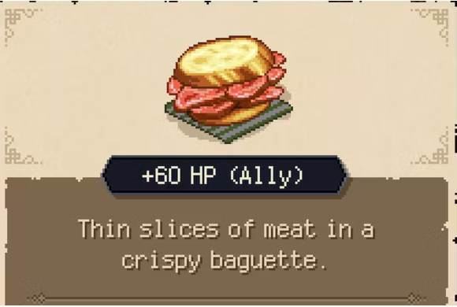

ROAST SANDWICH

Tender slices of slow-roasted beef nestled between two slices of toasted sourdough bread, topped with melted cheddar cheese and a tangy horseradish sauce. A deliciously savory and satisfying meal that will leave you craving more.
- 1 pound of thinly sliced slow-roasted beef
- 4 slices of sourdough bread
- 4 slices of cheddar cheese
- 2 tablespoons of prepared horseradish sauce
- Butter for toasting bread
- For extra HP: lettuce, tomato, red onion slices for added toppings
- Arm yourself with a sharp knife to stack the flavorful ingredients on the sourdough bread slices: slow-roasted beef, cheddar cheese, a dollop of horseradish sauce, and any optional toppings you dare to add.
- Wage war on blandness as you construct your sandwich masterpiece, ensuring each layer is stacked with precision and gusto to create a symphony of flavors.
- Commandeer a skillet over a blazing stovetop or open flame and melt a knob of butter to toast the assembled sandwich until the bread is golden and crispy, and the cheese begins to melt into the savory meat.
- Skillfully flip the sandwich to toast the other side, vigilant in ensuring a perfect balance of crunch and gooey, melted cheese.
- Conquer your hunger as you savor the aromas wafting from your triumphant creation, allowing the flavors to dance on your palate as you indulge in a feast fit for a fearless culinary adventurer. Gourmet glory awaits you!